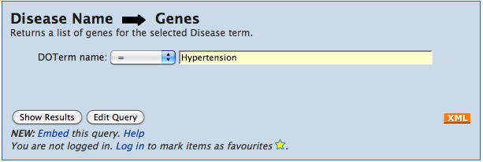

The template we found in our previous search takes a particular disease ontology term as input and searches for genes that have that DO annotation. Click on the title of the template to show the template form.
Now you can run the template with the default value or restrict it to the disease of your choice. The template features auto-complete so even if you do not know the specific term you should be able to find it by typing in only a few letters.
Click 'Show Results' to run this template with the default value:
